问题一：完成了什么，何时完成？
为每个必要操作规定物理参照事件、实际效果、时间窗口及独立测量规则。报告任务结果和时间结果，再计算联合结果。缺少证据保留 UNKNOWN。
研究主线：物理时间合同 → agentic 经验生成 → 独立验证与恢复 → 共享历史条件 Diffusion Policy → 学生访问状态回标／DAgger → 部署反馈。
RL 和多专家蒸馏是条件扩展；完整学习系统尚未完成。本轮新增10800次机械仿真（8640主矩阵＋1440反向扩展＋720强对照），同候选下主动公开历史66/180、清空57/180，9修复0损害；诊断成本与陈旧支持另行评估；此前提前恢复51/180与特权图66/180保留，没有新方案的VLA学习或真实化学收益证据。
化学操作可能要求在触发事件后及时结束操作，也可能要求持续到指定时刻。控制器接收了停止指令，样品仍可能受热、管路仍可能流动；观察、推理、排队与恢复期间，反应也持续向前。单次动作完成或最终成功标签不足以判断这些任务。
为每个必要操作规定物理参照事件、实际效果、时间窗口及独立测量规则。报告任务结果和时间结果，再计算联合结果。缺少证据保留 UNKNOWN。
恢复动作消耗剩余窗口，也可能影响其他反应。新批次成功不能覆盖原批次的失败。只有适用范围、依赖、资源和持续时间均获得支持，才考虑原尝试恢复。
我们的中心问题是：经过物理时间验证的恢复经验，能否进入一个共享、具有历史条件的机器人策略，并在新响应和新依赖关系下保持有效？Agent 管理经验生成与工程改进；低层策略执行动作。四个 harness 和训练工具是实现基础，方法优势需要匹配实验支持。
任一必要条件被可靠判为 FALSE，原尝试即失败；全部 TRUE 才联合 TRUE，其余为 UNKNOWN。物理判定与公开在线估计分别保留。
| 案例 | 关键问题 | 要验证的机制 |
|---|---|---|
| 01 · 接入与校准 | 相机、机器人、设备和时钟是否对齐？ | 区分捕获、交付、发送、接受和物理效果；固定版本与误差范围。 |
| 02 · 事件后限时操作 | 某个真实触发后，操作能否在窗口内完成？ | 感知迟到、决策迟到和执行迟到分别归因；比较校准计时器。 |
| 03 · 加热与过程停止 | 设备关机后，样品是否仍处于有效暴露？ | 设备终点、过程终点、化学终点独立；响应补偿不能只看 ACK。 |
| 04 · 多任务共享机器人 | 操作顺序、依赖和资源竞争是否让窗口失效？ | 同传感器与预算的确定性调度/MPC，以及新的任务图留出。 |
| 05 · 恢复或终止 | 继续观察、重试、换技能还是开新批次？ | 原失败不可回滚；成功支持与持续时间支持共同进入恢复判断。 |
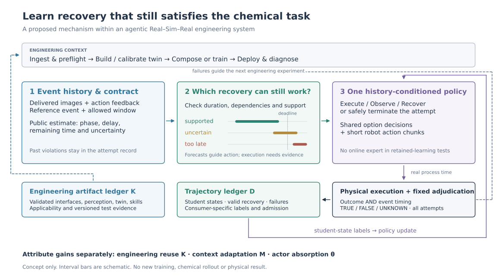
打开完整矢量图 · 局部闭环：执行 → 验证 → 诊断 → 恢复。全局闭环：部署反馈 → twin 校准/新数据/策略更新 → 留出验收。
| Harness | 职责 | 输出 |
|---|---|---|
| 接入与预检 | describe / calibrate / align clocks / preflight | 明确单位、权限、延迟与版本。 |
| 世界与经验 | reconstruct / step / replay / calibrate twin | 有来源的示范、失败与真实过程误差。 |
| 技能构建 | compose / repair / collect / train / label student states | 候选技能、教师支持范围及全部成本。 |
| 部署与诊断 | execute / monitor / diagnose / recover / terminate | 完整尝试、接管、独立结果与后续实验。 |
当前时刻、参照事件和动作持续时间均用区间表示。候选完成区间为 [t⁻ + d⁻ − τ⁺, t⁺ + d⁺ − τ⁻]；落入窗口只说明在支持假设下可能及时，不能替代独立结果。
还必须检查执行成功支持、前置条件、其他必要操作、依赖与共享资源。重置生成新尝试，原失败记录保留。
先运行共享的历史/语言/合同条件 Diffusion Policy，再用相同教师预算的学生状态 DAgger。训练准入分别对待成功、失败、恢复和 UNKNOWN；教师建议不等于已执行成功。
只有覆盖可信、确有决策瓶颈时才启用 option-level offline RL；online RL 先在校准仿真中进行。分布蒸馏需要兼容的动作与去噪目标。
已验证的接口、技能代码、配置与修复。记录适用条件、版本及创建/复用成本。
只含允许公开、已经到达的观测和反馈。多次尝试逐次测量适应，并用清空/打乱记忆作对照。
固定感知、twin 和 harness，关闭在线专家，清空上下文后再测保留效果，才能归因给参数学习。
GPT-6 Astra 定位为任务级 agent / data engine。DP、RL、OPD 是候选学习工具；固定串联训练阶段本身不能证明 Robot RSI。真实过程不等待 agent 返回。
覆盖三种机械响应、三种反馈延迟、两个窗口、三类指令故障。原生积分记录173,016个状态样本。
策略使用公开编码器和设备反馈；RGB为实际渲染记录。它不是视觉策略训练或54种独立化学任务。
没有独立反应终点，没有新学习模型。时间 TRUE 不自动成为化学任务 TRUE。
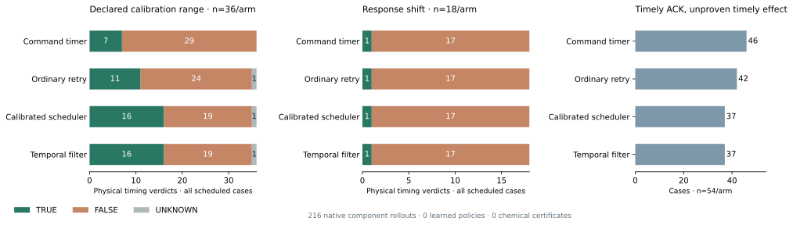
| 控制 | 全部54例 T / F / U | 标定范围36例 | 响应变化18例 |
|---|---|---|---|
| 命令计时器 | 8 / 46 / 0 | 7 / 29 / 0 | 1 / 17 / 0 |
| 普通重试 | 12 / 41 / 1 | 11 / 24 / 1 | 1 / 17 / 0 |
| 校准调度器 | 17 / 36 / 1 | 16 / 19 / 1 | 1 / 17 / 0 |
| 时间过滤器 | 17 / 36 / 1 | 16 / 19 / 1 | 1 / 17 / 0 |
主要发现：校准调度器与时间过滤器结果相同，强基线差值为0。标定范围内相对普通重试多5例时间 TRUE；变化响应下两者只有1/18时间 TRUE。命令计时器有46例 ACK及时、物理终点却不及时。
参照是原生转子轴角跨过2 rad；终点是转速换算的流量代理≤0.005 mL/s持续0.2 s，时间取持续低流量段的起始区间。没有测量真实液滴或化学反应。
13条轨迹的候选时间被预测 eligible，最终却非 TRUE；其中三条属于同一范围内边界案例，其他来自超出标定的响应变化。持续指令故障会增加第二次恢复成本。这说明成功条件下的时长预测不是完整恢复准入，也不是物理证书。
显式反馈与控制等待推进模拟过程；实际 CPU/渲染耗时只记录，未推进模拟时钟。配对审计仅证明54组分叉前机械前缀相同，不宣称全幅RGB精确配对。未证明 VLA、权重吸收、真实安全或化学收益。
此前C5提前预测实验新增32条闭环/10272帧RGB，复用16条来源：线性预测14/16流量TRUE；二次预测15/16流量TRUE，但命令与流量同时TRUE降为10/16。C6校准timer已能满足当前组件窗口。这些强基线和反例保留，不转写成学习方法优势。
此前C5实验报告 · 历史ICML补充稿V5。历史稿尚未按新故事完整改写。
8,640次主矩阵、1,440次反向扩展和720次配对补测；10,810,800个物理样本，全部保持B连续性。没有新RGB、LLM机器人采集或权重训练。
相同第2次历史输入，主动历史优于清空。被动历史与清空均57例；之前的表面收益被候选覆盖解释。66例逐例对应声明图的全部可达案例。
旧的“首条会丢失”经验在设备恢复有效后可能改变原触发事件。2例重新计时显示TRUE，原合同仍FALSE。评分保护尚未阻止所有危险动作。
主控制器v1遗漏“仅全局停止”，并限制了不需要故障记忆的候选。独立冻结的v2向所有臂开放相同完整候选，沿用真实首轮产生的第2次历史输入。该补测只有一个检查点，没有v2十次累计或故障切换曲线。
| 第2次检查点 | v1 TRUE / FALSE / UNKNOWN | v2 TRUE / FALSE / UNKNOWN | v2对清空：修复 / 损害 |
|---|---|---|---|
| 清空上下文 | 51 / 129 / 0 | 57 / 123 / 0 | — |
| 被动公开历史 | 55 / 125 / 0 | 57 / 123 / 0 | 0 / 0 |
| 主动公开历史 | 64 / 116 / 0 | 66 / 114 / 0 | 9 / 0 |
| 来源不匹配拒绝 | 51 / 129 / 0 | 57 / 123 / 0 | 0 / 0 |
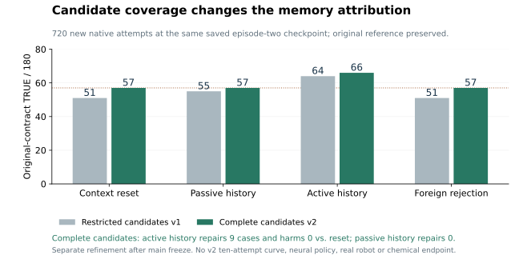
逐例核对180例：主动通过的66例与特权保持参照图可达集合相同，114例与该图不可达集合相同。图使用已知无噪声模型、真实故障身份、10ms网格和放宽的等待守卫；不是所有机器人动作的最优值。这项结果尚不能证明VLA学习优势。
| 稳定条件，180例／臂 | 第1次TRUE | 第2、3、5、10次TRUE | 累计TRUE / FALSE / UNKNOWN，分母1800 |
|---|---|---|---|
| 被动公开历史 | 51 | 55 | 546 / 1254 / 0 |
| 主动公开历史 | 46 | 64 | 622 / 1176 / 2 |
| 清空上下文 | 46 | 51 | 505 / 1293 / 2 |
| 来源不匹配拒绝 | 46 | 51 | 505 / 1293 / 2 |
主动与清空的首轮诊断相同且计入分母：v1累计34.6%对28.1%。来源不匹配拒绝测试安装与版本边界，不是VLM文字顺序消融。主动与被动同时改变了诊断策略，二者差值不能全部归因给记忆。
| 第6次故障改变，分母72 | 主动 / 清空 TRUE | 配对修复 / 损害 | 十次累计主动 / 清空 TRUE，分母720 |
|---|---|---|---|
| 正向循环：主矩阵 | 17 / 16 | 1 / 0 | 194 / 158 |
| 反向循环：另冻扩展 | 11 / 16 | 1 / 6 | 179 / 158 |
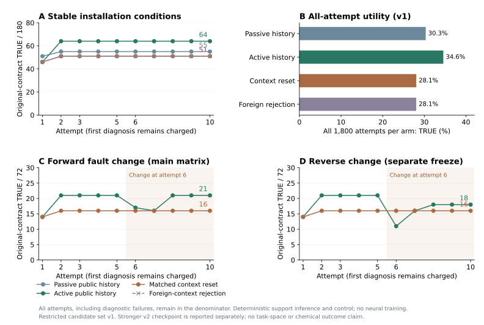
当前支持来自已经交付的动作后果。后续接管会遮蔽原执行器反馈；因此兼容集合的交集未必发现设备变化。图中旧的丢失支持允许提前提交命令，首条重新有效后，原2rad事件被消除。独立原参照保护将其判FALSE，失败不会被后续恢复改写。
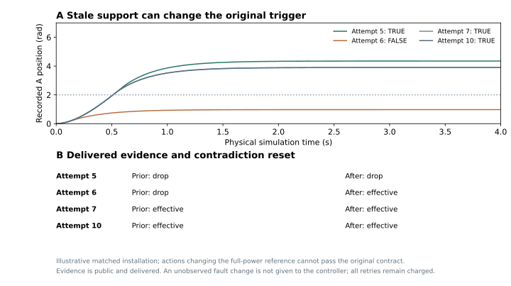
公开控制回放、独立物理FIFO重建、公开支持、来源／交付时刻及原参照逐次检查通过。三个队列的原生重建误差0；44次开发／预检不计入新增主结果。原始轨迹保存在科研工作区，公开仓库发布摘要、图与稿件。
这证明已知故障族下的确定性历史适应及其失效边界，尚无神经ICL、权重吸收或自主RSI验证。
先比较当前尝试复核、候选完整规则和参照保护，再引入未知响应、噪声、时间变化服务和规划期间持续运行的物理过程。共享历史条件DP＋学生状态回标／DAgger须与同工具、同预算强规则比较。
关闭教师、清空记忆后测参数保留；新目标组合、依赖图和恢复条件单独留出。真机、持续时钟及化学终点仍MAJOR_OPEN。
主机计算和11s尝试间隔没有持续推进动力学，所以不能宣称实时机器人时间保证。机械响应配置也不是化学任务空间泛化。GPT-Policy已使用自身历史与受约束执行；我们的贡献需由独立物理合同、诊断代价、恢复和经验吸收实验建立。
八对已经交付的观测用于早期响应辨识，预测参照事件并预留指令。记录360,360个原生样本和3,960张RGB；实际参照与物理效果负责计分，RGB未用于策略输入。
提前完整可行路径优先保留129个FALSE，UNKNOWN降至0。所有控制在180例中均满足B连续运行。改善来自确定性控制；策略权重、视觉模型和LLM训练均未执行。
提前图可达66例、不可达114例，保留全部案例。该图知道故障身份并放宽反馈等待；它不是在线因果最优值。与51例之间的15例差距不能直接归为学习空间。
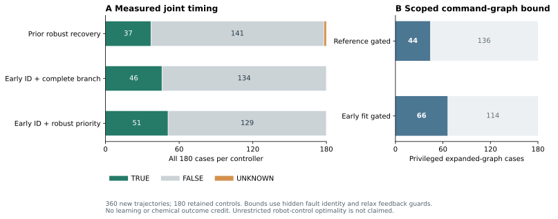
| 控制 | 联合TRUE / FALSE / UNKNOWN | 相对旧强恢复：修复 / 损害 |
|---|---|---|
| 旧完整可行路径优先 | 37 / 141 / 2 | — |
| 提前完整分支 | 46 / 134 / 0 | 13 / 4 |
| 提前完整可行路径优先 | 51 / 129 / 0 | 14 / 0 |
提前完整分支相对旧强恢复还改变了优先级，因此出现4例损害。额外事后同分支归因复用此前完整分支33/180，得到33→46、13修复和0损害；这项补充没有新增执行，不属于事前确认性比较。无噪声旋转轴参数案例不等于独立化学任务。
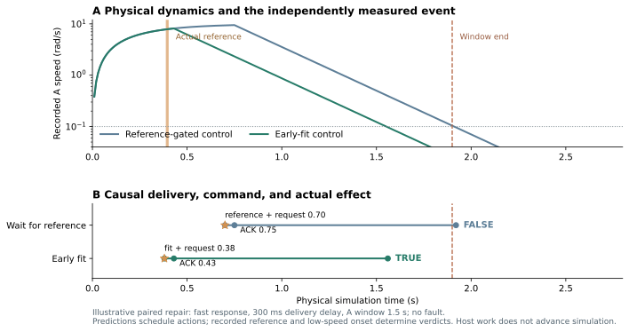
360次控制回放和独立辨识通过，物理重建误差0，参数拟合差异低于2.4×10⁻¹⁶。两种图合计110个原生命令见证重开验证；540条主比较均在其声明图内。图搜索保留10ms网格、FIFO、真实服务耗时与满功率参照事件。
114例不可达只对这份保持参照事件的动作图及其控制子集成立。主机计算未推进仿真时间，没有实时硬件结论。
事后故障支持审计只读取已交付反馈；全局接管遮蔽的原动作保留未决。提前强恢复76/180可辨识、104/180未决。在该轮这些支持尚未进入下一次尝试；本轮公开历史实验与强对照见上方新增报告。
下一轮先比较同历史、同预算的确定性调度、有效记忆、清空与打乱记忆，再决定是否训练共享DP及学生状态DAgger。当时尚未执行记忆比较；本轮确定性历史比较已完成，权重学习仍未完成。
近邻核验：已有实时action chunking、STL引导扩散策略和时间进度条件DP。本文应验证“独立物理事件合同＋失败后恢复＋公开经验吸收”的组合机制，不能宣称首个时间感知VLA。完整方法与真实化学验收仍MAJOR_OPEN。
另保留108条旧基线，共720个比较单元。新增612,612个原生样本、6,732张RGB；临时测试与旧数据不计新增。全部新物理重建、事件计分和公共历史回放通过。
仅用已交付、参考事件之前的速度，经典最小二乘可辨识当前无噪声模型的惯量和阻尼。错误条件准入8→0，但完整分支控制的物理计分逐例不变。
先选择完整分支可行路径，否则尝试成功分支。相对完整分支控制修复4例、损害0例，保留141FALSE和2UNKNOWN。没有策略权重训练或化学终点证据。
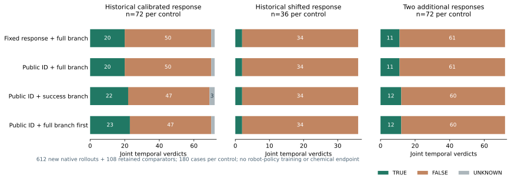
| 匹配信息控制 | 联合T / F / U /180 | 完整支持后实际非TRUE |
|---|---|---|
| 固定响应＋完整分支 | 33 / 145 / 2 | 8 |
| 公开辨识＋完整分支 | 33 / 145 / 2 | 0 |
| 公开辨识＋成功分支优先 | 36 / 141 / 3 | 0 |
| 公开辨识＋完整可行分支优先 | 37 / 141 / 2 | 0 |
最后一列不统计成功分支本身的风险；只要求成功分支的控制仍有5个重试后非TRUE案例。数值模型支持不是硬件覆盖证书。参数案例不等于独立任务或化学批次。
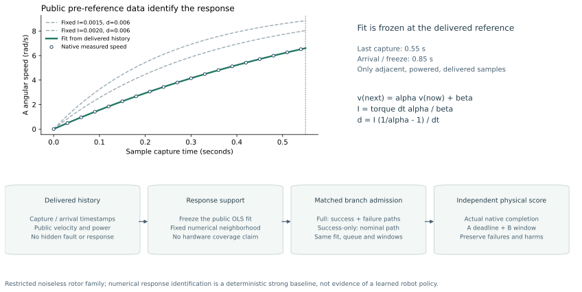
成功分支优先修复4例、损害1例：持续故障下，原TRUE变为UNKNOWN。该案例已有完整可行的延后全局停止候选，却被重试挤掉。
因此另冻结180次实验，先选完整可行路径，避免这项损害并保留4个修复。这是看过初始结果后的开发追加，不是预注册确认实验或最优性证明。
540次独立参数拟合、612次公共回放、180组四臂初始前缀和240组故障历史一致性检查通过。RGB仅记录；没有VLA读取或权重学习。
准确预测不能扩展动作集合或使不可行窗口可行。下一实验先求现有动作图的可达上界，再加入公开历史的提前调度强基线，之后验证学习与经验吸收的独立收益。
以下保留此前研究阶段与当时计划。真实机器人、化学终点、策略权重学习和完整论文科学验收仍未完成。
129,762个原生状态样本，2,754张RGB。另引用此前216条对照；合计378个不同rollout，不是378个独立任务。
重试成功的时间支持不足以覆盖重试失败、反馈等待、备用停止与残余过程衰减。修订后原UNKNOWN案例变为时间TRUE。
完整路径控制为18/54时间TRUE。单设备、只有上截止时间的组件，不能证明复杂agentic或学习方法的独立优势。
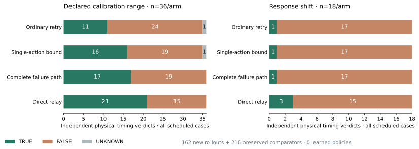
| 控制 | 全部54例 T / F / U | 标定范围36例 | 响应变化18例 |
|---|---|---|---|
| 普通重试 · 引用旧轨迹 | 12 / 41 / 1 | 11 / 24 / 1 | 1 / 17 / 0 |
| 单动作时间过滤 · 引用旧轨迹 | 17 / 36 / 1 | 16 / 19 / 1 | 1 / 17 / 0 |
| 完整分支时间过滤 · 新轨迹 | 18 / 36 / 0 | 17 / 19 / 0 | 1 / 17 / 0 |
| 匹配的完整分支调度 · 新轨迹 | 18 / 36 / 0 | 17 / 19 / 0 | 1 / 17 / 0 |
| 直接备用停止 · 新轨迹 | 24 / 30 / 0 | 21 / 15 / 0 | 3 / 15 / 0 |
机制修订：在0.70s决策时，只计算成功重试得到完成上界2.71s；加入失败后的故障等待和备用停止，上界变成2.96s，跨过[2.94,2.95]s的截止区间。修订控制立即备用停止，独立实测终点从[2.95,2.96]s变为[2.26,2.27]s。
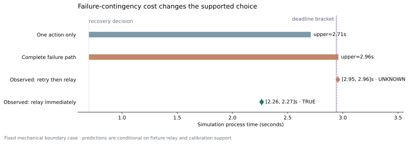
这是以备用停止可执行和有限时长标定为条件的路径支持；不是全局可恢复性或化学证书。完整过滤和匹配调度共用决策规则，二者结果相同。
全部162条新轨迹从原始样本独立重算，全部RGB摘要核对。范围内没有剩余eligible后非TRUE案例；范围外4个参数案例仍失败，两个等价规则共8条轨迹。有限样本不构成覆盖保证。
导出162份离线事件记录，绑定可信外部摘要。在线标签交付时间未测量，记录不能进入在线上下文；机器人BC准入为0，化学return mask为0。尚未运行RL或接入SafeLab。
当前模型中，尽早设置零驱动不会推迟停止终点。36个单步数值探针和18组原生控制比较支持这一限定解释；它不适用于化学终点或共享设备。
下一协议检验全局停止A是否破坏B的必要持续操作，并比较选择性停止、重试和同权限的多约束调度。新增任务单独冻结，继续保留简单基线和完整分母。
现有采集器提供三视角RGB、关节与末端状态，以及单臂13维/双臂26维动作。检查发现其媒体时间是 frame_index / fps。它适合轨迹布局，但不能证明某个物理事件在何时发生。
复用任务、仿真、控制与采集接口规范。源任务继续运行；源码、现有作业和资源注册表保持只读，未复制失败批次为合格数据。
增加尝试/批次身份、时钟转换证据、捕获/交付、发送/接受、物理参照/效果、独立化学结果及标签到达时间。证据缺失保留UNKNOWN。
4090 SSH转发端口当前拒绝连接，当前主机无canonical数据manifest。原生Isaac机器人实验与GPU训练尚未执行。
| 问题 | 匹配对照 | 否证条件 |
|---|---|---|
| Q1 · 时间机制 | 校准timer、调度/MPC、固定模块、标准DP、接口兼容时的RTC；同传感器、保护、预算与判定。 | 校准控制消除了提升，或提升只来自额外传感器。 |
| Q2 · 有效恢复经验 | 普通重试与匹配DAgger；运行时限制 × 恢复训练目标2×2；相同教师权限、调用和学生标签状态。 | 收益全部来自外部过滤，或教师覆盖不匹配。 |
| Q3 · 策略吸收 | 参数更新 × 上下文更新2×2；固定外部栈；关闭测试专家；真实/清空/打乱记忆。 | 清空记忆或固定harness后收益消失，不能证明进入参数。 |
| Q4 · 任务空间泛化 | 留出响应、目标组合、顺序、依赖和恢复条件；相同划分和资源；审计合同对。 | 只在已知模板有效，或标定/未来信息泄漏。 |
第一次尝试与第2、3、5、10次尝试分别报告；统计单元是任务、真实批次和训练seed，帧不作为独立样本。所有失败、拒绝、UNKNOWN和候选成本都进入报告。
工程复用和自适应改进选择在前述计量可用后开展：比较冷启动/验证过的工件、固定配方/证据驱动的更新选择，保持相同总预算与独立最终留出。
下一执行顺序：事件sidecar与原生组件 → 强控制基线 → 可信学生状态标签 → 共享DP/DAgger → 参数/上下文归因 → 留出任务与独立真实转移。RL和分布蒸馏按证据条件启用。
已穷举 432 个确定性参数格，10 项本地测试通过。没有图像、模型调用、训练或物理试验；时间单位为模型 tick。过程在等待和工具调用期间变化。最优策略使用已知模型，是效用（成功率减成本）的上界，不是成功率上界。
精确期望成功概率 （包含截止失败）
旧帧推理改善对初始状态的解读；重新观察获得返回时刻的新信息。每次物理动作再消耗 1 tick，计算按每 tick 0.01 成本计入优化目标。最优策略最大化成功概率减去成本，不能据此宣称学成的 VLA 优于真实基线。
已有 VLA 处理截止时间、同步或部署延迟。本项目不能声称“没有任何 VLA 关注时间”；候选贡献是化学操作时间与计算决策的联合学习。
STL 条件化与截止时间，是时间要求的重要近邻。
世界在推理期间推进，延迟建模、教师训练及学生状态蒸馏。
GPT 直接动作与修正 VLA 的混合策略。
示范上下文、机器人工具与约束执行反馈。
异步动作生成与已提交动作前缀。
计算与停止选择的 rational metareasoning 基础。